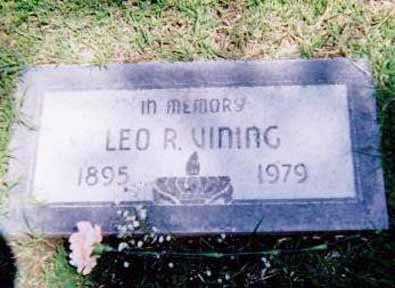
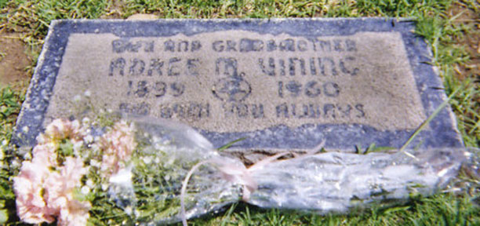

Documentation for Leo Roy Vining - Ada Marian Day
Census Data
| |
1920 |
1930 |
1940 |
| Leo Roy Vining |
24 |
33 |
43 |
| Adree M. (Day) Vining |
21 |
29 |
42 |
| Leo Warren Vining |
[illegible] |
13 |
23 |
1920 Los Angeles Township (Precinct 160), Los Angeles County, California - dwelling 195, family 230:

1930 Los Angeles Township (Assembly District 72), Los Angeles County, California - dwelling 243, family 244:


1940 Los Angeles, Los Angeles County, California:

Death Data
Gravestones for Leo Roy Vining and Adree Marian (Day) Vining, in Fairhaven Memorial Park, Santa Ana, California (Source: Find A Grave):

